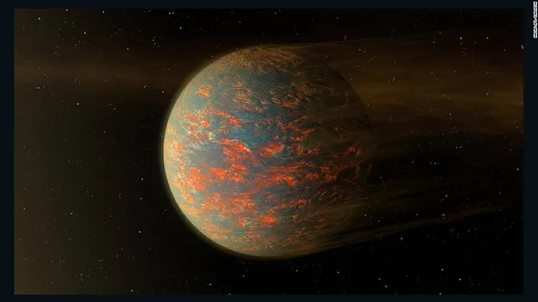
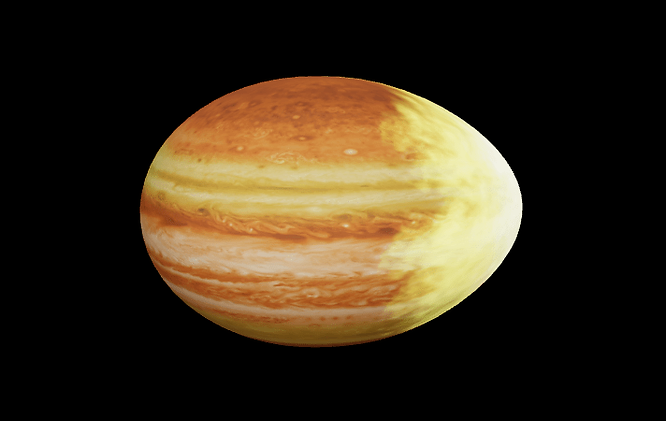
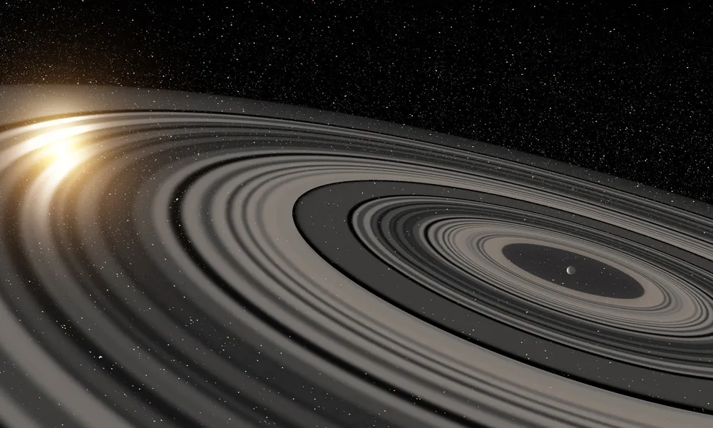
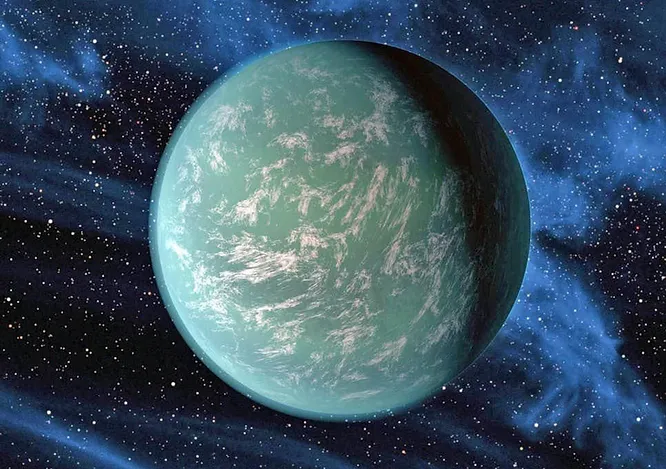

Este es un planeta situado a unos 63 años luz de la Tierra en la constelación de Vulpecula. Este planeta ha llamado la atención de los científicos debido a su vívido color azul profundo. Este color se forma en el planeta no debido al agua, sino debido a un fenómeno muy interesante. Este planeta resulta ser un gigante gaseoso con condiciones no tan serenas. Los vientos en este planeta tienden a viajar a velocidades que superan las 5400 millas por hora o 8700 kilómetros por hora. Para comparación, la velocidad del viento en Júpiter es de solo 268 millas por hora o 432 kilómetros por hora. Y el planeta obtiene su distintivo color azul debido a la existencia de partículas de silicato.
55 Cancri e

Este planeta ha cautivado a científicos y usuarios de internet por igual debido a su composición muy única. Se especula que este planeta en particular tiene una superficie compuesta por diamantes y que la lluvia allí también consiste completamente de diamantes. Entonces, si de alguna manera llegas allí, seguramente te enriquecerás y quizás hasta te perforarás con un diamante que caiga.
Este planeta está situado a 40 años luz de la Tierra en el sistema 55 Cancri. Este planeta es el doble del tamaño de la Tierra y orbita extremadamente cerca de su estrella anfitriona. Se entiende que esta condición única del planeta se debe a las altas temperaturas y presiones. Actualmente, se requiere una investigación adicional para confirmar estas condiciones.
Wasp 12-b

Este es uno de los exoplanetas más singulares que existen. Este planeta es un gigante gaseoso, similar a Júpiter, y se encuentra a 870 años luz de la Tierra. Su característica más destacada es que orbita extremadamente cerca de su estrella anfitriona, lo que hace que el planeta complete una órbita en tan solo un día.
Esta condición única se debe a la cercanía del planeta a su estrella anfitriona. La distancia es 1/43 de la distancia entre la Tierra y nuestro Sol. Esta proximidad ha llevado a un calentamiento intenso, lo que provoca que la atmósfera del exoplaneta se estire y desgarre debido a la fuerza gravitacional de la estrella.
J1407b

Aproximadamente a 420 años luz de distancia en nuestra galaxia se encuentra un planeta joven que orbita alrededor de una estrella joven similar al Sol. Este planeta tiene anillos, al igual que Saturno. Lo que no se parece a Saturno en absoluto es el tamaño verdaderamente colosal de los anillos.
Conozcamos a J1407b, un exoplaneta 20 veces más masivo que Saturno. Los anillos de este Súper Saturno se extienden a lo largo de 180 millones de kilómetros. Eso es más grande que la distancia entre la Tierra y el Sol, que es de 150 millones de kilómetros, ¡y 200 veces más grande que los anillos de Saturno!
Kepler 22-b

Es posible que hayas oído hablar de este planeta en particular, ya que es uno de los planetas más intrigantes jamás descubiertos. Kepler 22b es una Supertierra descubierta en 2011 y se dice que es un planeta con el potencial de albergar vida extraterrestre. Esto se debe a que el planeta está cubierto por un superocéano y se encuentra en la zona habitable.
El planeta está inclinado de lado, al igual que Urano, y con ello tiene un período orbital de 299 días. Estas condiciones juntas hacen de este planeta un lugar de gran interés tanto para los astrónomos como para los medios de comunicación.